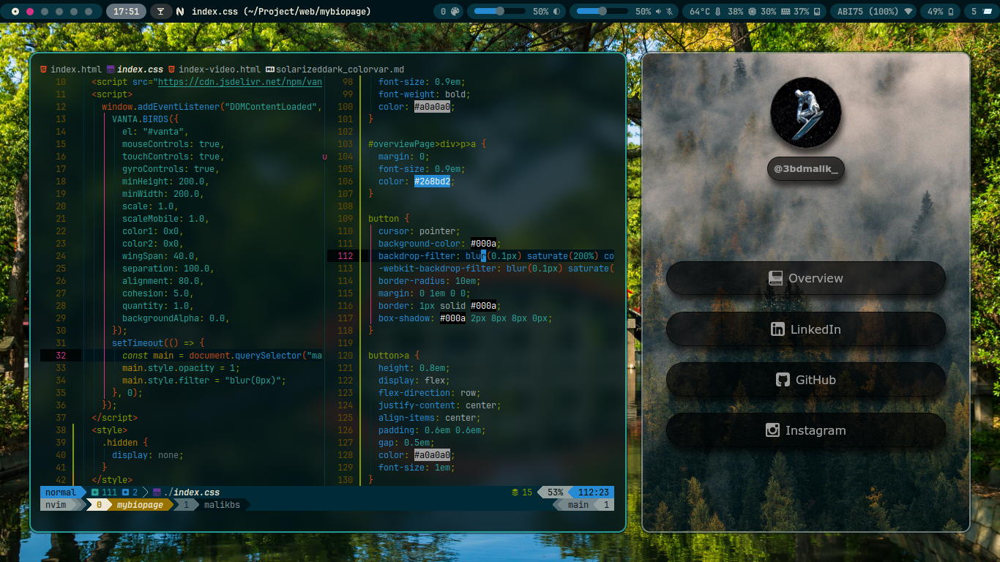
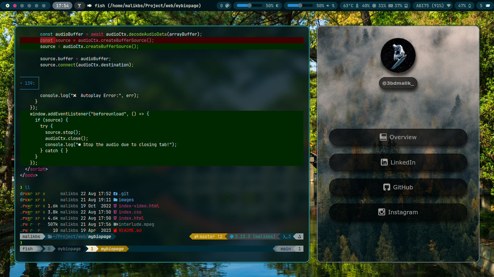
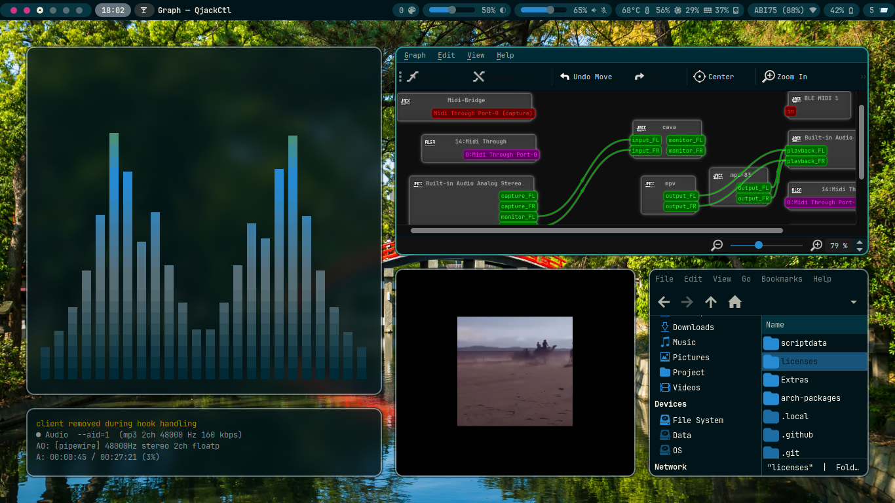
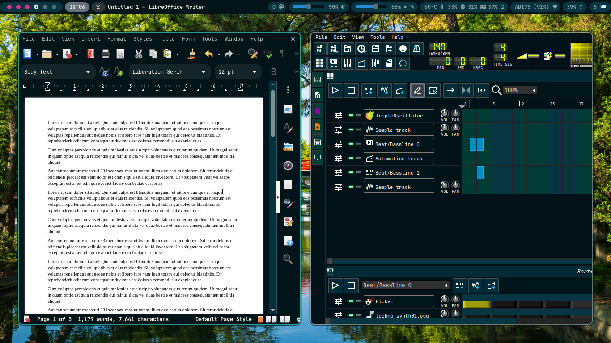

@3bdmalik_

@3bdmalik_
💠 Development Environment
My development environment for both app and web development is built entirely on Linux. I primarily use Neovim as my text editor, fish as my interactive shell, and Alacritty as my terminal emulator. This setup provides a highly customizable and efficient workflow tailored for productivity and simplicity. The complete configuration files and setup details can be found in my public dotfiles repository dotfiles-public-link.
 💠 Linux Rice
The current operating system is Arch Linux, running on Wayland as the display server. To manage windows and compositing, I use Hyprland, which combines tiling window management features with smooth graphical effects. Several additional packages are included to complement the desktop environment: waybar – a customizable status bar for Wayland, mako – a lightweight notification daemon, rofi-wayland – an application launcher optimized for Wayland.
 For more details, including projects or configuration files, please refer to my github github-link!